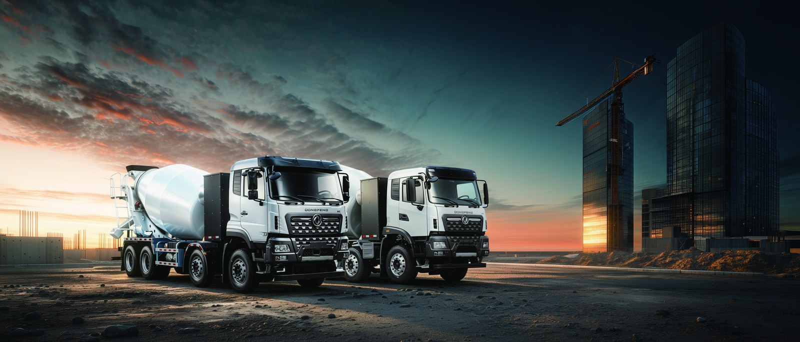

Importing a commercial EV truck into Jordan through the Aqaba Special Economic Zone (SEZ) is materially simpler and cheaper than a standard border entry. The SEZ treatment, combined with Jordan's reduced duty on electric vehicles, lets fleet buyers land an electric truck with a lower total cost and a predictable timeline. This guide walks the documents, duties, and week-by-week process.
Jordan applies a preferential special tax on electric commercial vehicles that is lower than the rate on equivalent diesel trucks. Through Aqaba, importers also benefit from streamlined customs handling and deferred VAT where an approved warehouse keeper is used. A battery electric cargo truck typically faces a special tax in the low double digits, versus a higher rate on a diesel counterpart of the same GVW.
The SEZ also allows temporary storage and inspection inside the zone, which shortens the time the vehicle spends under customs control. For a fleet buyer importing a batch of units, consolidating through Aqaba avoids the heavier documentation load of inland border posts and lets a single clearing agent handle the whole lot under one bond.
Because Aqaba is a free zone, the importer can also perform pre-delivery inspection, software setup, and driver training inside the zone before the truck enters the domestic market, which reduces the chance of a post-clearance defect dispute that would otherwise require re-import paperwork.
Prepare the file before the vessel sails. The core set for an electric truck import into Jordan is:
The KTH3 electric cargo truck is a common Aqaba import because its 300 kWh LFP battery, 282 kW motor, 280 km range, and 25t GVW suit regional distribution from Aqaba to Amman and Irbid.
The table below maps a typical Aqaba electric truck import from sail to release. Actual timing varies with inspection backlog, but the sequence is stable.
| Week | Step | Owner |
|---|---|---|
| Week 0 | Vessel departs factory port, documents sent to clearing agent | Exporter |
| Week 2 | Arrival at Aqaba, BL presented, customs declaration filed | Agent |
| Week 3 | Document check, COC and origin verified, duty assessed | Customs |
| Week 3 to 4 | Physical inspection and VIN match at SEZ yard | Customs |
| Week 4 | Duty paid, release issued, inland transport to depot | Importer |
Most clean submissions release in 3 to 4 weeks. Delays come from a missing Certificate of Origin or a COC that does not match the VIN, so double-check those two before the ship sails. A batch of five or more units is inspected as a sample, which usually adds only a day or two rather than per-unit delays.
The table models one KTH3 imported via Aqaba at an FOB of USD 62,000, with freight and insurance of USD 3,500 and a special tax of 12 percent on the CIF value.
| Cost line | Amount (USD) |
|---|---|
| FOB price | 62,000 |
| Freight and insurance | 3,500 |
| CIF value | 65,500 |
| Special tax at 12 percent | 7,860 |
| Aqaba handling and clearance | 1,200 |
| Total landed cost | 74,560 |
Against a diesel equivalent that carries a higher special tax and no SEZ electric preference, the Aqaba electric route saves roughly USD 8,000 to 12,000 per unit at landing. Buyers in the Jordan EV truck market should confirm the current special tax rate at filing, because it is revised periodically and the saving moves with it.
Once released, the KTH3 runs regional routes from a depot charger. A 20 to 80 percent DC fast charge takes 45 to 75 minutes, and overnight AC charging covers a typical 280 km daily loop. Battery swap is optional at 5 to 6 minutes where a swap site exists near the corridor.
Fleets should book the clearing agent at least two weeks before arrival and pre-register the importer with Jordan Customs to avoid a week-one stall. Keeping the COC and Certificate of Origin in a single folder shared with the agent prevents the most common hold, and confirms the VIN appears identically on the BL, the invoice, and the COC.
Match the VIN on every document, use the correct HS code for a battery electric goods vehicle, and declare the LFP battery capacity accurately. Inaccurate battery figures trigger a re-inspection. Finally, choose CIF or CIP Aqaba so the exporter carries risk until the port, which simplifies the claim path if transit damage occurs, and ask the agent for a written clearance estimate so the landed cost in the table matches reality.
Marine cargo insurance should cover the full CIF value plus a 10 percent margin for incident handling. Battery packs are high-value and sensitive to crushing, so specify handling clauses that prohibit stacked deck cargo and require ventilated hold storage. A clean arrival protects both the COC verification and the battery health baseline you will later use for resale.
Transit from the Chinese factory port to Aqaba runs roughly 18 to 22 days. Build that into the delivery promise you give your customer, and never commit a fixed in-service date tighter than the ship plus the 3 to 4 week clearance window, because a missed date damages the depot relationship more than a conservative one.
Once the first KTH3 clears Aqaba and proves its 280 km daily loop, the repeat order is straightforward: the COC and origin paperwork are already accepted, so subsequent lots clear in 2 to 3 weeks. Consolidate multiple units on one Bill of Lading to share freight and the Aqaba handling fee, which lowers the per-unit landed cost toward the USD 74,000 example shown above.
For a 10-truck deployment, the cumulative Aqaba saving against diesel equivalents reaches USD 80,000 to 120,000 at landing, before the operating saving begins. That front-loaded benefit is what makes the Aqaba SEZ route the lowest-friction way to enter the Jordan electric truck market at scale.
Jordan Customs values the truck on the transaction price, so an invoice that looks artificially low triggers a reference-price challenge and a hold. State the true FOB, keep the freight separate, and attach the supplier's commercial quote so the declared value matches the paper trail. A clean valuation clears in the 3 to 4 week window; a disputed one can add a month.
The battery is the other valuation risk. Declare the LFP capacity in kWh accurately and attach the UN38.3 summary, because an unexplained high-value battery can be flagged for a supplementary duty query. Fleets that pre-file the battery specification with the agent avoid the surprise inspection that delays release and ties up working capital at the port.
Before the vessel sails, confirm four things: the Certificate of Origin matches the China-Arab preference, the COC VIN matches the BL and invoice, the LFP capacity is declared with the UN38.3 summary, and the clearing agent is booked with Jordan Customs. With those four items ready, an Aqaba electric truck import releases in 3 to 4 weeks and lands roughly USD 8,000 to 12,000 below a diesel equivalent, a saving worth planning the whole order around.
Ready to electrify your fleet? Contact Shaanxi Fenghan Trading — authorized Dongfeng EV truck exporter. WhatsApp: +86 153 1943 1311 | Email: sales@fenghan-trade.com | dongfengevtrucks.com
🌐 Our Network: Fenghan Trade (SAGMOTO/SHACMAN Truck Export) · SAGMOTO heavy duty diesel trucks